Introduction
This vignette covers the customisation features of plotit: how to
control scales with trans and range, set
labels, apply themes, transform coordinates, and split data into
facets.
Scales in Depth
All eight scale_*() functions share identical
parameters. The two most powerful are trans (how data is
transformed) and range (what visual values are
produced).
The trans Parameter
trans controls how data values are mapped to visual
properties:
trans |
Effect | Works on |
|---|---|---|
"identity" |
Linear (default) | All |
"log", "log10",
"log2"
|
Logarithmic | x, y |
"sqrt" |
Square-root | x, y |
"reverse" |
Reverse order | All |
"discrete" |
Treat as categories | All |
"binned" |
Bin then discretize | All except shape, linetype |
# Logarithmic x-axis
mtcars |>
plotit(encode(x = wt, y = mpg)) |>
mark_point(size = 2) |>
scale_x(trans = "log10") |>
label_title("Log-transformed x-axis")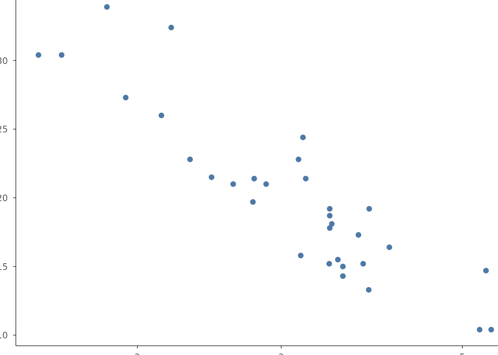
# Binned colour scale
iris |>
plotit(encode(x = Sepal.Width, y = Sepal.Length, colour = Sepal.Length)) |>
mark_point(size = 2) |>
scale_color(trans = "binned", range = "viridis")
#> Scale for colour is already present.
#> Adding another scale for colour, which will replace the existing scale.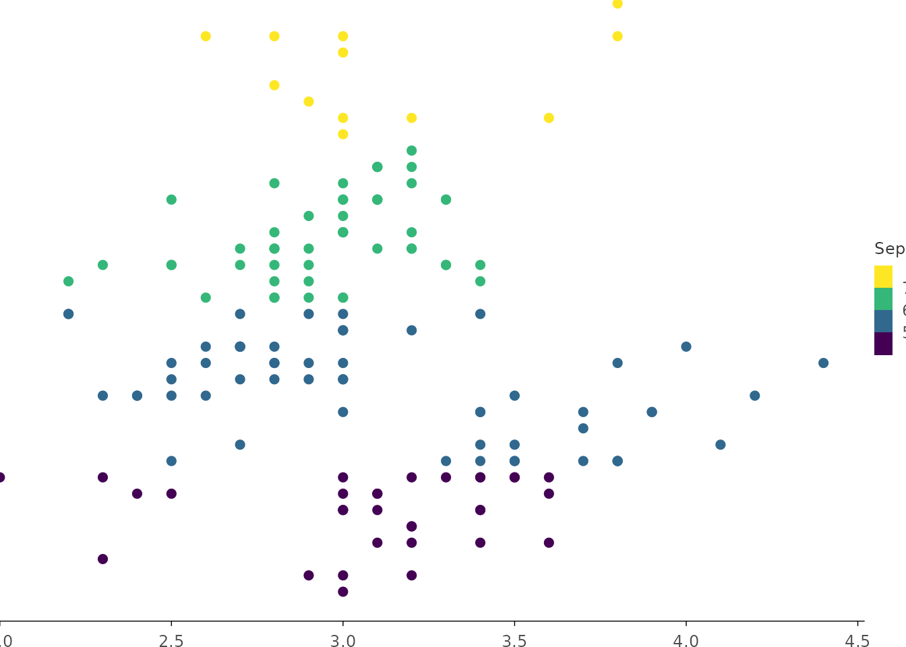
# Reverse order
mtcars |>
plotit(encode(x = factor(cyl), y = mpg)) |>
mark_boxplot() |>
scale_x(trans = "reverse")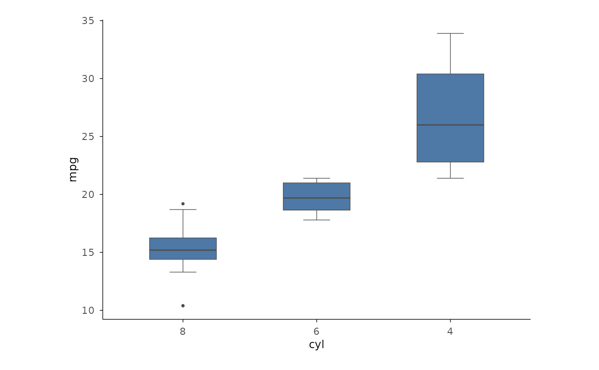
The range Parameter
range specifies the visual output — colour schemes, size
ranges, or axis limits.
# Viridis colour scheme (continuous)
mtcars |>
plotit(encode(x = wt, y = mpg, colour = hp)) |>
mark_point(size = 3, alpha = 0.8) |>
scale_color(range = "viridis")
#> Scale for colour is already present.
#> Adding another scale for colour, which will replace the existing scale.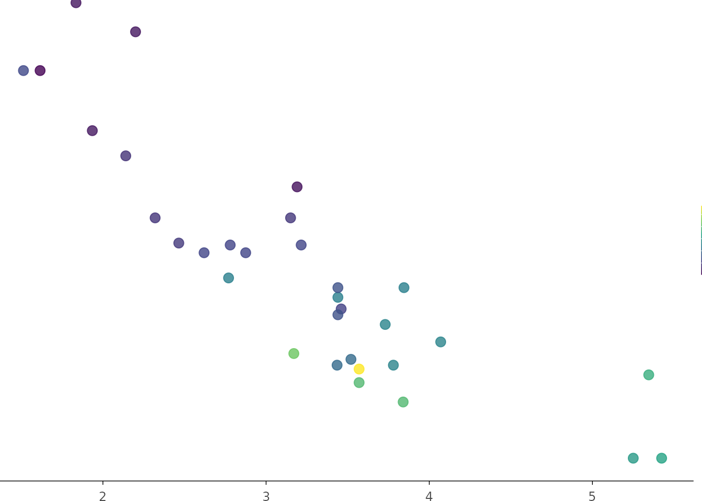
# Brewer discrete scheme
iris |>
plotit(encode(x = Sepal.Width, y = Sepal.Length, colour = Species)) |>
mark_point(size = 2) |>
scale_color(range = "brewer")
#> Scale for colour is already present.
#> Adding another scale for colour, which will replace the existing scale.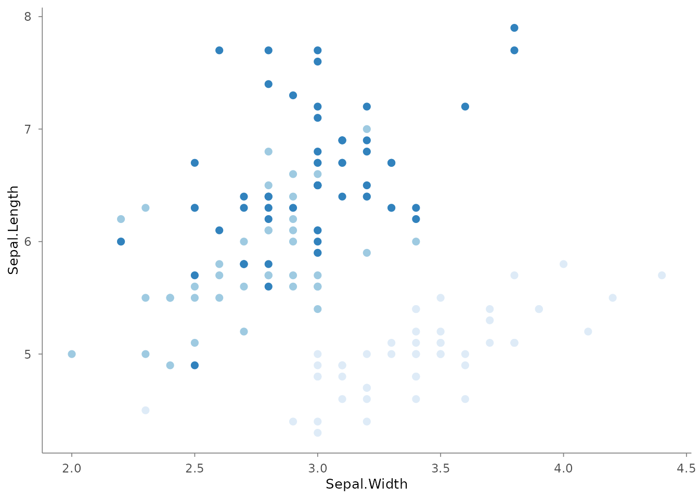
# Custom colour gradient
mtcars |>
plotit(encode(x = wt, y = mpg, colour = hp)) |>
mark_point(size = 3) |>
scale_color(range = c("steelblue", "tomato"))
#> Scale for colour is already present.
#> Adding another scale for colour, which will replace the existing scale.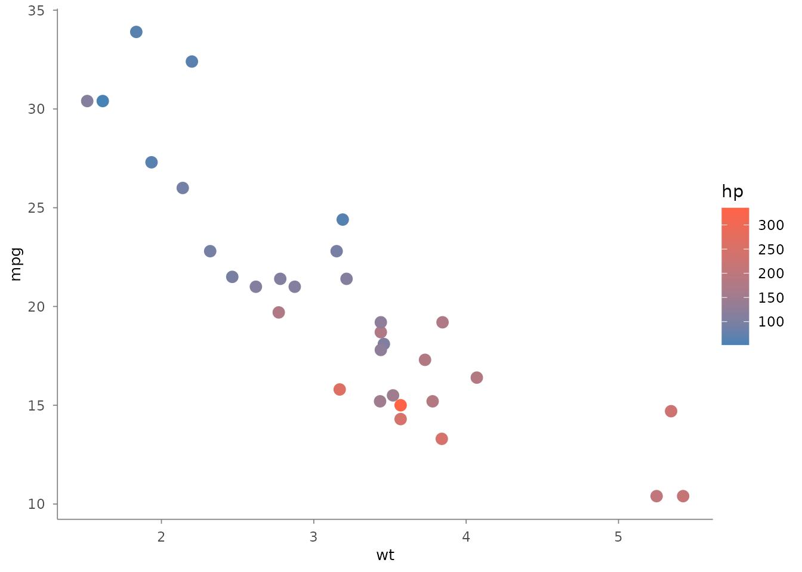
# Custom size range
mtcars |>
plotit(encode(x = wt, y = mpg, size = hp)) |>
mark_point(alpha = 0.6) |>
scale_size(range = c(1, 15))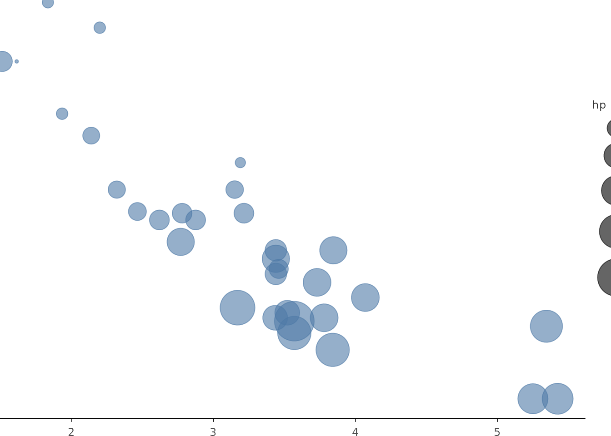
Labels: The Three-Parameter Protocol
Every label function accepts three mutually exclusive parameters:
text, hide, and reset. Priority
is well-defined: reset always wins, then hide,
then text.
Setting Titles
iris |>
plotit(encode(x = Sepal.Width, y = Sepal.Length, colour = Species)) |>
mark_point() |>
scale_color(range = "viridis") |>
label_title("Iris Sepal Measurements") |>
label_subtitle("Three species, 150 observations") |>
label_caption("Data: Anderson (1935)")
#> Scale for colour is already present.
#> Adding another scale for colour, which will replace the existing scale.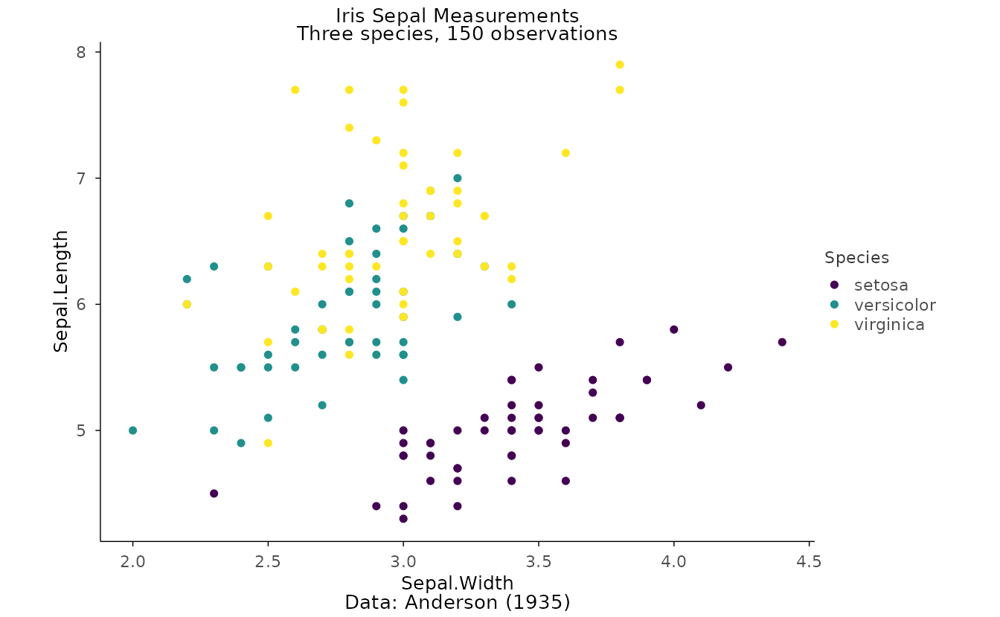
Axis and Legend Labels
iris |>
plotit(encode(x = Sepal.Width, y = Sepal.Length, colour = Species)) |>
mark_point() |>
scale_color(range = "viridis") |>
label_axis("Sepal Width (cm)", aes = "x") |>
label_axis("Sepal Length (cm)", aes = "y") |>
label_legend("Iris Species", aes = "colour")
#> Scale for colour is already present.
#> Adding another scale for colour, which will replace the existing scale.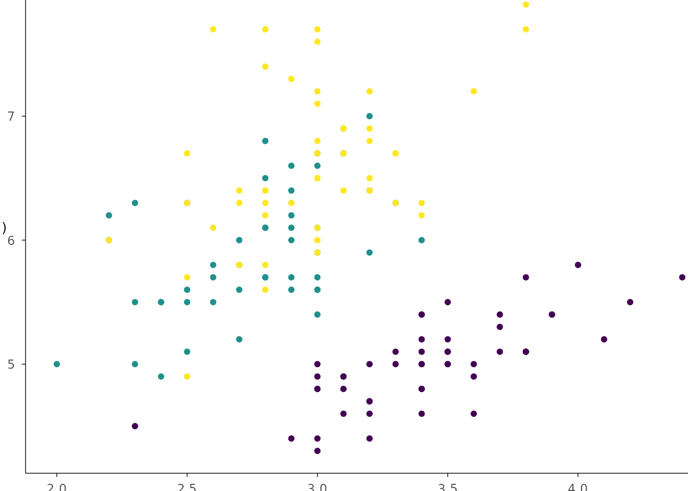
Hiding Elements
hide = TRUE removes the element and its space from the
layout:
iris |>
plotit(encode(x = Sepal.Width, y = Sepal.Length, colour = Species)) |>
mark_point() |>
scale_color(range = "viridis") |>
label_title(hide = TRUE) |>
label_legend(hide = TRUE, aes = "colour")
#> Scale for colour is already present.
#> Adding another scale for colour, which will replace the existing scale.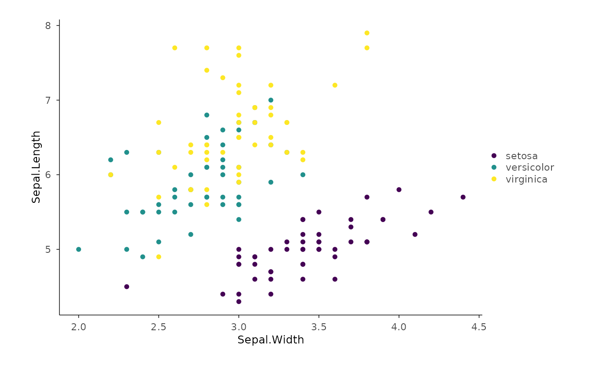
Resetting to Defaults
reset = TRUE restores the default variable name (for
axes and legends) or removes the text (for titles):
iris |>
plotit(encode(x = Sepal.Width, y = Sepal.Length)) |>
mark_point() |>
label_axis("Custom X", aes = "x") |>
label_axis(reset = TRUE, aes = "x") # restores "Sepal.Width"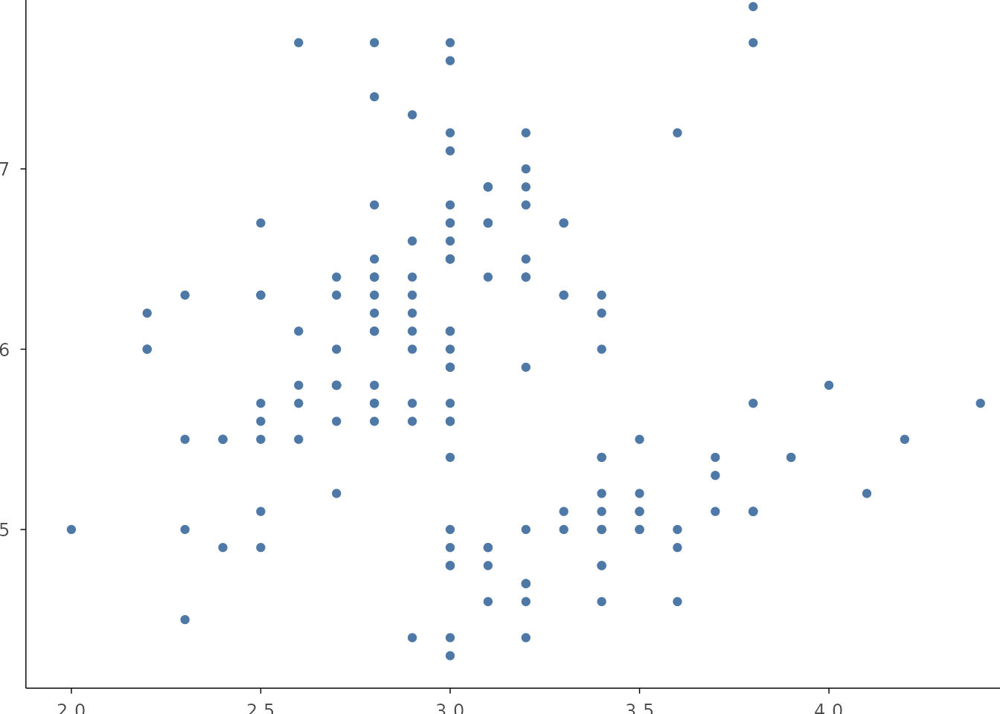
Themes with style()
style() applies a base theme and merges overrides via
...:
iris |>
plotit(encode(x = Sepal.Width, y = Sepal.Length, colour = Species)) |>
mark_point(size = 2, alpha = 0.7) |>
scale_color(range = "viridis") |>
style(
base_theme = ggplot2::theme_minimal(base_size = 14),
plot.title = ggplot2::element_text(face = "bold", colour = "#2c3e50"),
legend.position = "bottom"
) |>
label_title("Iris Sepal Measurements")
#> Scale for colour is already present.
#> Adding another scale for colour, which will replace the existing scale.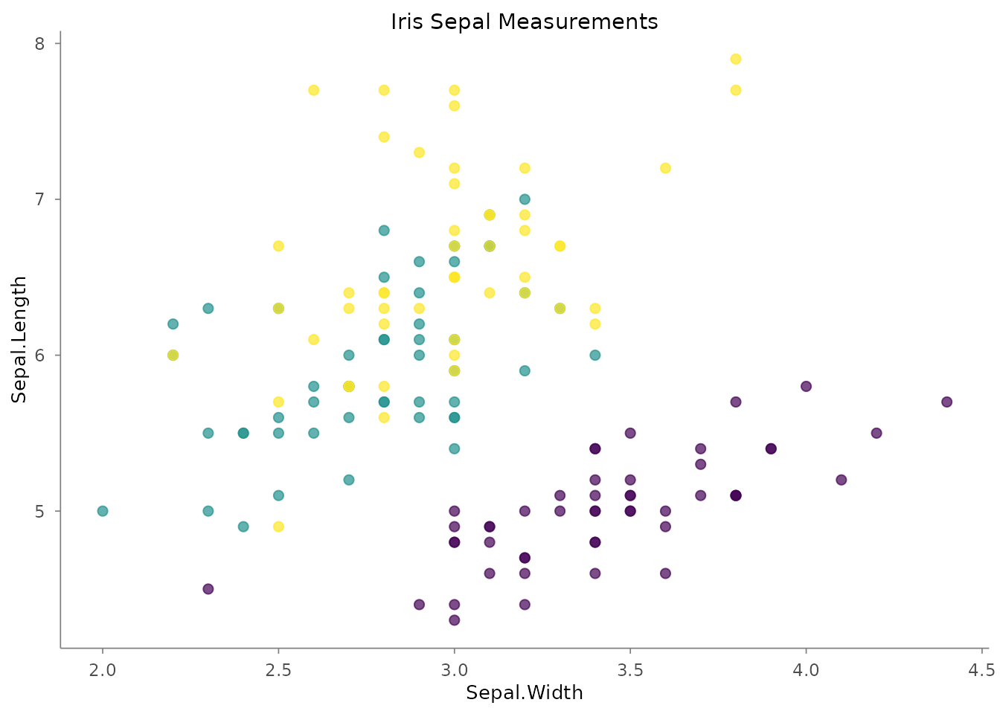
style() without a base_theme applies the
built-in plotit default theme:
iris |>
plotit(encode(x = Sepal.Width, y = Sepal.Length, colour = Species)) |>
mark_point() |>
scale_color(range = "viridis") |>
style(base_size = 12)
#> Scale for colour is already present.
#> Adding another scale for colour, which will replace the existing scale.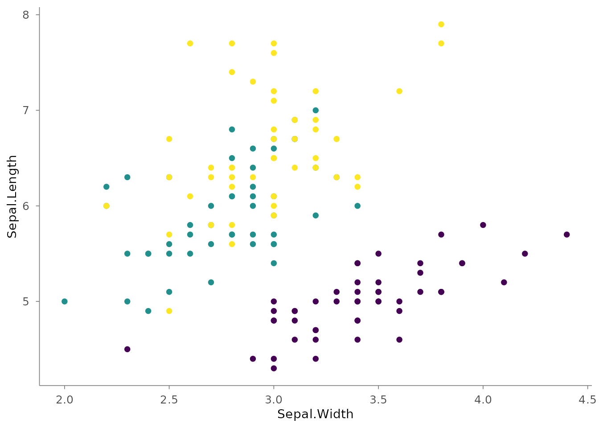
Coordinate Systems with project_*()
Cartesian: Flip, Zoom, Fixed Ratio
# Flip axes
iris |>
plotit(encode(x = Species, y = Sepal.Length, fill = Species)) |>
mark_boxplot() |>
project_cartesian(flip = TRUE)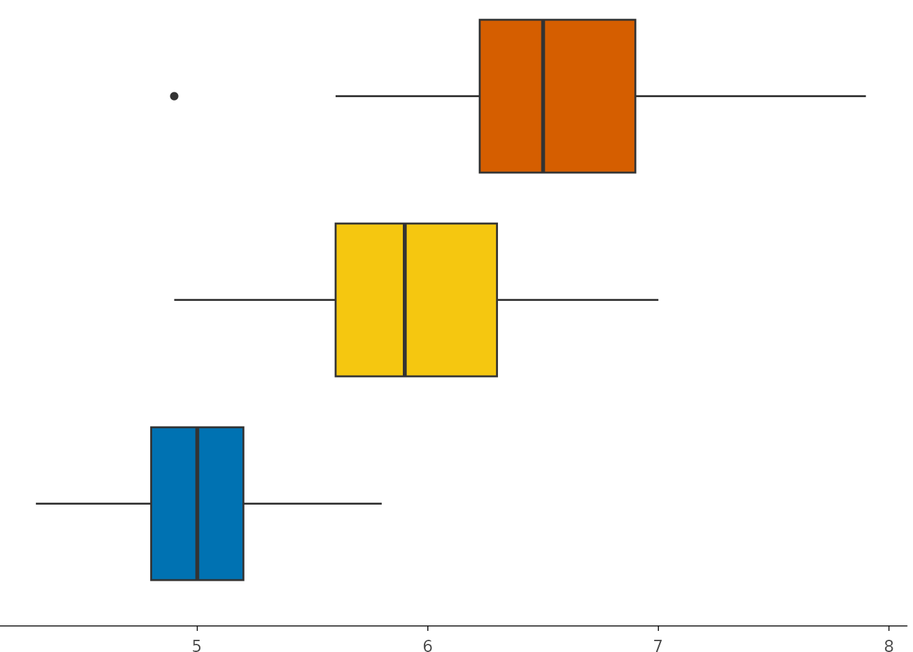
# Fixed aspect ratio
mtcars |>
plotit(encode(x = wt, y = mpg)) |>
mark_point() |>
project_cartesian(fixed = 1)Polar Coordinates
mtcars |>
plotit(encode(x = factor(cyl))) |>
mark_bar() |>
project_polar()Parallel Coordinates
iris |>
plotit(encode()) |>
project_parallel(
columns = c("Sepal.Length", "Sepal.Width", "Petal.Length", "Petal.Width"),
group = "Species",
scale = "std"
)Facets with split_*()
# Wrapped facets
iris |>
plotit(encode(x = Sepal.Width, y = Sepal.Length)) |>
mark_point() |>
split_wrap(Species, ncol = 3)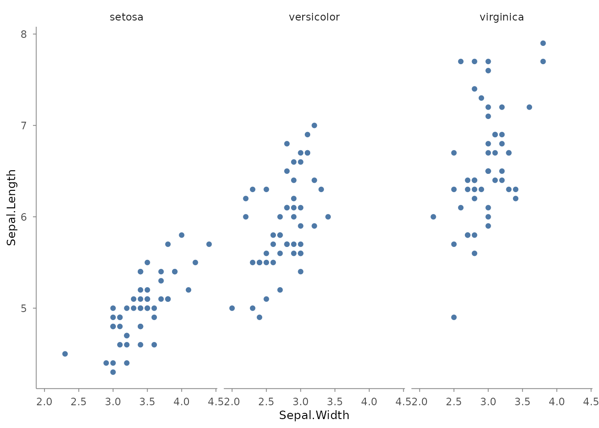
# Grid facets <U+2014> uses ggplot2::vars() for formula-free specification
mtcars |>
plotit(encode(x = wt, y = mpg)) |>
mark_point() |>
split_grid(rows = ggplot2::vars(cyl), cols = ggplot2::vars(am))Default Colour
When no colour or fill is mapped, plotit
injects a sensible default blue (#4E79A7). This is
automatically cleared when you add any colour or fill scale:
# Default colour (no colour in mapping)
iris |>
plotit(encode(x = Sepal.Width, y = Sepal.Length)) |>
mark_point(size = 2)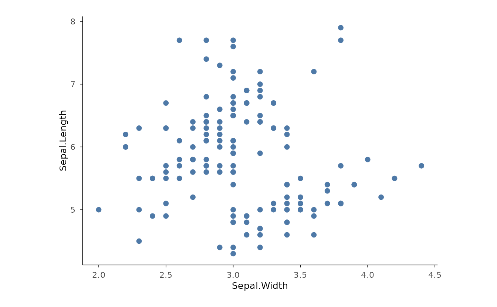